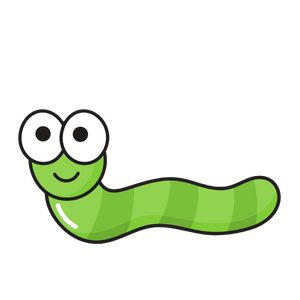

QUIENES SOMOS
Conoce un poco mas de quién está detras de Kandy Truck...


Conoce un poco mas de quién está detras de Kandy Truck...
En Kundy Truck, no solo ofrecemos chuches para todos,
sino que también promovemos un impacto positivo en la
sociedad. Nuestra Responsabilidad Social Corporativa
(RSC) se basa en tres pilares:
- Inclusión: Chuches veganas, sin gluten y accesibles para
todos.
- Sostenibilidad: Envases biodegradables, reducción de
plásticos y proveedores locales.
- Compromiso Social: Donaciones a causas benéficas y
apoyo a comunidades vulnerables.
Creemos en un mundo más dulce, responsable y
sostenible. ¡Únete a nuestro compromiso! 🍭♻️
Buscamos ser el food truck de referencia en Madrid,
expandirnos y promover un consumo responsable, guiados por la inclusión, la creatividad y precios accesibles.
- Chuches inclusivas y de calidad.
- Opciones para todos (veganas, sin gluten).
- Referencia en Madrid y expansión.
- Consumo responsable.
- Inclusión, creatividad, accesibilidad.
“Gusigoom” es la mascota de nuestra marca, como puedes ver en la esquina derecha, ahí está, simpático y reconocible (puedes pulsarle a ver qué hace)!
